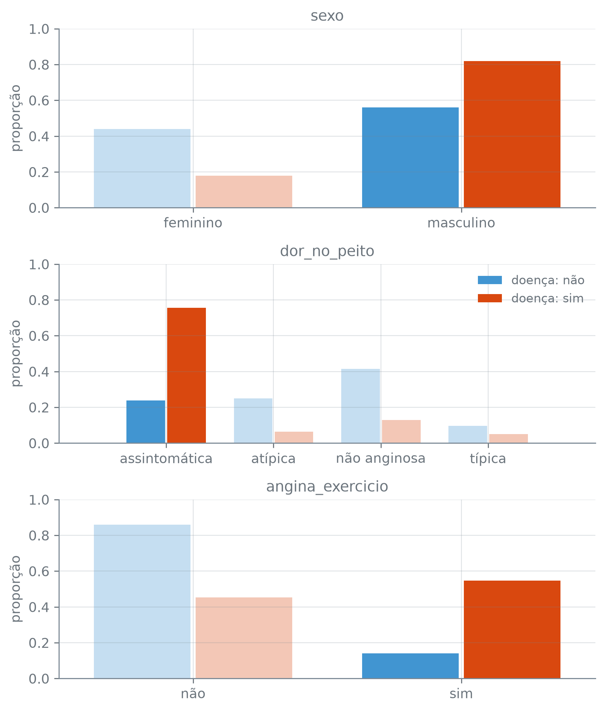
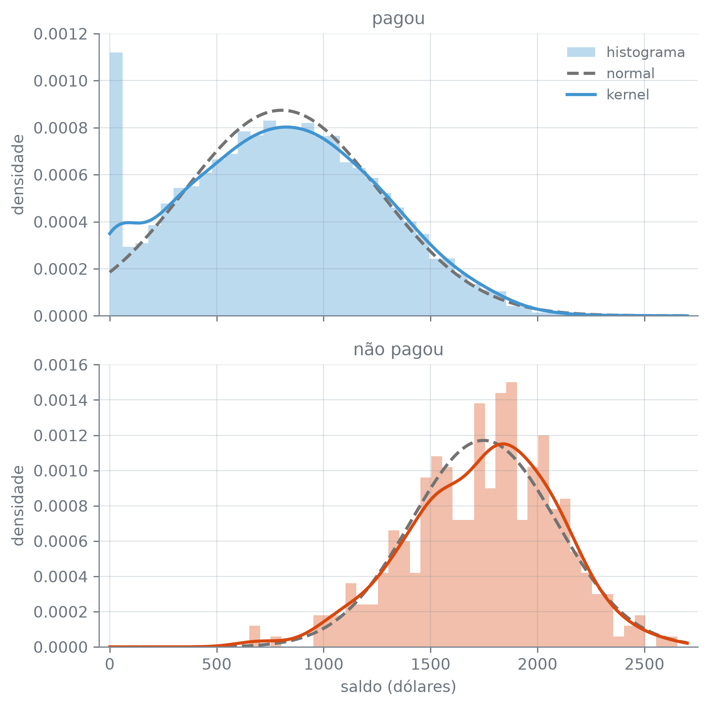

br = lambda v, casas=2: (
f"{v:,.{casas}f}"
.replace(",", "_")
.replace(".", ",")
.replace("_", ".")
.replace("-", "−")
)Naive Bayes
Nota
Esta seção corresponde às seções 4.4, 4.4.4 e 4.5.1 de James et al. (2023).
Entre os pacientes com doença cardíaca, que tipo de dor no peito é mais comum? E entre os que não têm a doença? Sabendo como cada medida se distribui dentro de cada classe, dá para inverter a pergunta e estimar a probabilidade de doença de um paciente novo, sem ajustar curva logística nenhuma. Esse é o caminho dos modelos generativos: em vez de modelar \(\Pr(Y \mid X)\) direto, como a regressão logística, eles modelam como \(X\) se distribui dentro de cada classe e só depois convertem isso em probabilidade de \(Y\). O Naive Bayes é o mais simples deles, e a conta inteira cabe num paciente contado à mão.
A função br escreve os números com a pontuação brasileira:
Um paciente, contado à mão
O Heart reúne pacientes com dor no peito, cada um com medidas clínicas e o diagnóstico de doença cardíaca na coluna doenca_cardiaca, sim ou não. Três das medidas são simples de obter: o sexo (1 para masculino, 0 para feminino), o tipo de dor_no_peito que o paciente relata (típica, atípica, não anginosa ou assintomática) e angina_exercicio, 1 quando a dor aparece no teste de esforço. Dá para estimar a chance de doença cardíaca só com essas três medidas?
O primeiro ingrediente é a proporção de cada classe entre os pacientes. Com normalize=True, value_counts devolve frações em vez de contagens:
import numpy as np
import pandas as pd
heart = pd.read_csv(
"dados/Heart.csv")
preditores = ["sexo",
"dor_no_peito",
"angina_exercicio"]
Xp = heart[preditores]
yp = heart["doenca_cardiaca"]
pi_p = yp.value_counts(
normalize=True).sort_index()
print("pacientes:", len(heart))
print("π̂ (não):",
br(pi_p["não"], 4))
print("π̂ (sim):",
br(pi_p["sim"], 4))pacientes: 303
π̂ (não): 0,5413
π̂ (sim): 0,4587São as probabilidades a priori de cada classe, \(\hat\pi_k\): antes de olhar para o paciente, 0,4587 dos 303 têm a doença. O segundo ingrediente é, para cada preditor, a fração dos pacientes de cada classe em cada categoria. Uma tabela cruzada dividida pelo total de cada coluna dá as duas classes de uma vez:
props = {}
for col in preditores:
props[col] = pd.crosstab(
Xp[col], yp,
normalize="columns")
props["sexo"].round(3)| doenca_cardiaca | não | sim |
|---|---|---|
| sexo | ||
| 0 | 0.439 | 0.18 |
| 1 | 0.561 | 0.82 |
pd.crosstab(linhas, colunas, normalize="columns"): a tabela de contagens cruzadas, com cada coluna dividida pelo seu total; cada coluna, aqui uma classe, soma 1.
Entre os doentes, 0,82 são homens, contra 0,561 entre os sem doença. A dor no peito separa mais:
dor = props["dor_no_peito"]
sem_maior = (dor["não"]
> dor["sim"])
print("não > sim em",
int(sem_maior.sum()), "de 4")
dor.round(3)não > sim em 3 de 4| doenca_cardiaca | não | sim |
|---|---|---|
| dor_no_peito | ||
| assintomática | 0.238 | 0.755 |
| atípica | 0.250 | 0.065 |
| não anginosa | 0.415 | 0.129 |
| típica | 0.098 | 0.050 |
A dor assintomática é a de 0,755 dos doentes e de só 0,238 dos que não têm a doença; nas outras três categorias, a proporção dos sem doença é maior. Agora, um paciente concreto. O perfil que mais se repete nos dados é um bom candidato, porque permite comparar a conta com o que os dados mostram diretamente:
perfis = Xp.value_counts()
mais_comum = perfis.index[0]
paciente = dict(zip(
preditores, mais_comum))
for nome, v in paciente.items():
print(f" {nome}: {v}")
print("com esse perfil:",
perfis.iloc[0], "pacientes") sexo: 1
dor_no_peito: assintomática
angina_exercicio: 1
com esse perfil: 62 pacientesÉ um homem, com dor assintomática e angina no teste de esforço. A figura abaixo mostra as proporções dos três preditores, com as categorias desse paciente em cor cheia e as demais esmaecidas.
import matplotlib.pyplot as plt
nomes = {
"sexo": {0: "feminino",
1: "masculino"},
"angina_exercicio": {
0: "não", 1: "sim"}}
fig, eixos = plt.subplots(
3, 1, figsize=(6.4, 7.5))
for col, ax in zip(preditores,
eixos):
tab = props[col]
pos = np.arange(len(tab))
dele = (tab.index
== paciente[col])
for i, k in enumerate(
["não", "sim"]):
barras = ax.bar(pos
+ (i - 0.5) * 0.38,
tab[k], width=0.36,
color=f"C{i}",
label=f"doença: {k}")
for b, d in zip(barras,
dele):
b.set_alpha(
1 if d else 0.3)
rot = tab.rename(
index=nomes.get(col, {}))
ax.set_xticks(pos, rot.index)
ax.set_ylim(0, 1)
ax.set_title(col)
ax.set_ylabel("proporção")
eixos[1].legend(loc="upper right")
plt.tight_layout()
plt.show()
Heart: em azul, os pacientes sem doença cardíaca; em laranja, os doentes. Em cada painel, as barras de mesma cor somam 1. As barras em cor cheia são as categorias do paciente do exemplo, um homem com dor assintomática e angina no teste de esforço.
ax.bar(x, alturas, width): barras verticais nas posições x; deslocar as posições de cada classe deixa as barras lado a lado. A função devolve as barras desenhadas, e barra.set_alpha(a) muda a opacidade de uma delas, de 0 (invisível) a 1. ax.set_xticks(posicoes, rotulos): as marcas do eixo horizontal e o texto de cada uma. tabela.rename(index=dicionario): troca os rótulos das linhas pelos do dicionário; com o dicionário vazio que nomes.get(col, {}) devolve para dor_no_peito, deixa como estão.
Antes de fazer a conta, olhe as barras em cor cheia: em que classe você apostaria? O Naive Bayes formaliza essa intuição. Para cada classe, ele multiplica a proporção da classe pelas proporções das três respostas do paciente dentro dela:
fatores = {"π̂": pi_p}
for col, v in paciente.items():
fatores[col] = (
props[col].loc[v])
conta = pd.DataFrame(fatores).T
conta.loc["produto"] = (
conta.prod())
f_paciente = conta.iloc[1:4]
sim_maior = (f_paciente["sim"]
> f_paciente["não"]).all()
print("sim > não nos 3 fatores:",
bool(sim_maior))
conta.round(4)sim > não nos 3 fatores: True| doenca_cardiaca | não | sim |
|---|---|---|
| π̂ | 0.5413 | 0.4587 |
| sexo | 0.5610 | 0.8201 |
| dor_no_peito | 0.2378 | 0.7554 |
| angina_exercicio | 0.1402 | 0.5468 |
| produto | 0.0101 | 0.1554 |
tabela.prod(): o produto de cada coluna. tabela.T: a tabela transposta, com linhas e colunas trocadas; aqui, uma coluna por classe e uma linha por fator.
O produto da classe sim, 0,1554, é mais de dez vezes o da classe não, 0,0101, porque os três preditores puxam para o mesmo lado: nos três, a categoria do paciente é mais comum entre os doentes. Os dois produtos não somam 1; dividir cada um pela soma dos dois os transforma em probabilidades:
produto = conta.loc["produto"]
posterior = (produto
/ produto.sum())
print("Pr(não | paciente):",
br(posterior["não"], 4))
print("Pr(sim | paciente):",
br(posterior["sim"], 4))Pr(não | paciente): 0,0612
Pr(sim | paciente): 0,9388O Naive Bayes dá a esse paciente uma probabilidade de 0,9388 de ter doença cardíaca. Como o perfil se repete, dá para olhar direto a fração de doentes entre os pacientes iguais a ele:
iguais = (Xp == pd.Series(
paciente)).all(axis=1)
doentes = yp[iguais] == "sim"
print("fração de doentes:",
br(doentes.mean(), 4))fração de doentes: 0,9032(tabela == serie).all(axis=1): compara cada linha da tabela com a série, coluna a coluna, e devolve True nas linhas em que todas as colunas coincidem.
Entre os 62 pacientes com esse perfil, a fração de doentes é 0,9032, perto dos 0,9388 do Naive Bayes, que nunca olhou para as três respostas juntas: cada tabela usou os 303 pacientes, um preditor de cada vez.
Da conta à fórmula
A conta do paciente é o teorema de Bayes. Chame de \(\pi_k\) a probabilidade a priori da classe \(k\) e de \(f_k(x)\) a densidade de \(X\) entre as observações da classe \(k\): grande onde um \(X\) daquela classe é comum, pequena onde é raro. Para preditores qualitativos, como os do paciente, \(f_k(x)\) é a proporção da classe \(k\) que tem exatamente o perfil \(x\). O teorema junta as duas na probabilidade que interessa, a de \(Y\) dado \(X\):
\[ \Pr(Y = k \mid X = x) = \frac{\pi_k f_k(x)} {\sum_{l=1}^{K} \pi_l f_l(x)}. \]
O lado esquerdo é a probabilidade a posteriori, a que leva em conta o \(x\) observado; abrevie-a por \(p_k(x)\). O classificador de Bayes da seção 7.7 escolhe a classe de maior \(p_k(x)\) e tem a menor taxa de erro de teste esperada possível, se \(\pi_k\) e \(f_k\) forem os verdadeiros. Um modelo generativo troca os verdadeiros por estimativas e aplica a mesma regra.
Estimar \(\pi_k\) é fácil: é a fração das observações de treino que pertencem à classe \(k\). A parte difícil é \(f_k(x)\), porque ela descreve não só como cada preditor se distribui sozinho, a sua distribuição marginal, mas também como os preditores variam juntos, a distribuição conjunta. O Naive Bayes evita a conjunta com uma hipótese só: entre as observações de uma mesma classe, saber o valor de um preditor não muda a distribuição dos outros. Entre os doentes, por exemplo, saber o sexo de um paciente não mudaria a chance de ele relatar dor assintomática.
Dentro de cada classe, os \(p\) preditores são independentes. A densidade conjunta vira o produto das densidades marginais, e o numerador do teorema de Bayes vira o produto que o paciente usou:
\[ \begin{gathered} f_k(x) = f_{k1}(x_1) \times \cdots \times f_{kp}(x_p), \\ q_k(x) = \pi_k \, f_{k1}(x_1) \cdots f_{kp}(x_p), \\ \Pr(Y = k \mid X = x) = \frac{q_k(x)}{\sum_{l=1}^{K} q_l(x)}, \end{gathered} \]
em que \(f_{kj}\) é a densidade do preditor \(j\) entre as observações da classe \(k\).
Com a independência, ninguém precisa estimar como os preditores variam juntos: basta estimar \(p\) densidades de um preditor só em cada classe, cada uma com todas as observações da classe. É uma hipótese feita por conveniência, e quase nunca é exata.
Por que não contar perfis inteiros
Com três preditores, a contagem direta funcionou: o perfil do paciente tinha 62 pacientes. Mas o número de perfis possíveis é o produto do número de categorias de cada preditor, e ele cresce depressa. O Heart tem oito colunas qualitativas; com as três do exemplo e com as oito:
quali = preditores + [
"glicemia_alta",
"ecg_repouso",
"inclinacao_st",
"vasos_coloridos", "talio"]
for cols in [preditores, quali]:
t = heart[cols].dropna()
pf = t.value_counts()
poss = int(np.prod(
t.nunique()))
um = int((pf == 1).sum())
print(len(cols),
"preditores:")
print(" pacientes:", len(t))
print(" perfis possíveis:",
br(poss, 0))
print(" perfis presentes:",
len(pf))
print(" com 1 paciente:", um)3 preditores:
pacientes: 303
perfis possíveis: 16
perfis presentes: 15
com 1 paciente: 0
8 preditores:
pacientes: 297
perfis possíveis: 3.456
perfis presentes: 179
com 1 paciente: 119tabela.nunique(): o número de valores distintos de cada coluna; np.prod multiplica esses números. tabela.dropna() descarta as linhas com algum valor ausente, que vasos_coloridos e talio têm.
Com as três, 15 dos 16 perfis possíveis aparecem, e nenhum tem um paciente só. Com as oito, são 3.456 perfis possíveis para 297 pacientes (os que têm as oito colunas preenchidas). Só 179 perfis aparecem: os outros 3.277 (3.456 − 179) não têm paciente nenhum, e 119 dos 179 presentes têm um paciente só. Para a maior parte dos perfis, a fração de doentes entre os “iguais” a um paciente novo se apoiaria em ninguém ou num paciente só. O Naive Bayes continua usando uma tabela por preditor, cada uma com todos os pacientes da classe.
A independência introduz algum viés, mas tira da estimativa a associação entre os preditores, que pede muito dado para estimar bem. É o compromisso entre viés e variância da seção 7.6, e ele pende para o Naive Bayes quando \(n\) não é grande o bastante, diante de \(p\), para estimar bem a distribuição conjunta.
A CategoricalNB e a suavização
A CategoricalNB do scikit-learn faz a conta do paciente. Ela espera cada preditor codificado como 0, 1, 2…, e um OrdinalEncoder faz essa tradução. Por padrão, ela soma 1 a cada contagem antes de dividir, uma suavização que a próxima conta explica; com um alpha quase zero, usa as proporções cruas das tabelas, e o resultado tem de ser o da conta à mão:
from sklearn.naive_bayes import (
CategoricalNB)
import sklearn.preprocessing as pp
codif = pp.OrdinalEncoder()
Xp_cod = codif.fit_transform(Xp)
cnb = CategoricalNB(
alpha=1e-10,
force_alpha=True)
cnb.fit(Xp_cod, yp)
um = pd.DataFrame([paciente])
x_um = codif.transform(um)
p_cnb = cnb.predict_proba(x_um)
print("classes:", cnb.classes_)
print("Pr(sim), CategoricalNB:",
br(p_cnb[0, 1], 4))
igual = np.isclose(p_cnb[0, 1],
posterior["sim"])
print("igual à conta:",
bool(igual))classes: ['não' 'sim']
Pr(sim), CategoricalNB: 0,9388
igual à conta: TrueOrdinalEncoder(): troca as categorias de cada coluna por 0, 1, 2…, na ordem alfabética das categorias; .fit_transform(X) aprende as categorias e já traduz, e .transform(X) traduz outra tabela com as mesmas categorias. CategoricalNB(alpha, force_alpha=True): o Naive Bayes com uma tabela de proporções para cada preditor; alpha é o que se soma a cada contagem, e force_alpha=True manda a biblioteca usar o valor pedido, por menor que ele seja.
Por que somar alguma coisa às contagens? Se uma categoria nunca aparece entre os pacientes de uma classe, a proporção dela ali é zero, e o produto zera: todo paciente com essa categoria recebe probabilidade zero nessa classe, não importa o que digam os outros preditores. Nas oito colunas qualitativas do Heart, esse risco está perto:
yh = heart["doenca_cardiaca"]
cont = pd.concat({c:
pd.crosstab(heart[c], yh)
for c in quali})
pilha = cont.stack()
print("menor contagem:",
pilha.min())
print("onde:", pilha.idxmin())
menor3 = pilha.loc[
preditores].min()
print("menor, 3 preditores:",
menor3)
cnb1 = CategoricalNB().fit(
Xp_cod, yp)
p1 = cnb1.predict_proba(x_um)
print("Pr(sim), alpha=1:",
br(p1[0, 1], 4))menor contagem: 1
onde: ('ecg_repouso', 1, 'não')
menor, 3 preditores: 7
Pr(sim), alpha=1: 0,9355pd.concat({nome: tabela, ...}): empilha as tabelas, uma embaixo da outra, com o nome de cada uma como primeiro nível do índice das linhas. tabela.stack() leva as colunas para dentro do índice e devolve uma série, uma contagem por linha; serie.idxmin() é o rótulo do menor valor, aqui (coluna, categoria, classe).
A menor contagem é 1: um único paciente sem doença tem ecg_repouso igual a 1. Sem ele na amostra, a proporção seria zero, e qualquer paciente novo com ecg_repouso igual a 1 receberia probabilidade zero de não ter a doença. A suavização soma alpha a cada contagem antes de dividir, e nenhuma proporção fica zero. Nos três preditores do exemplo, a menor contagem é 7, longe de zero, e com alpha=1 o posterior do paciente fica em 0,9355, contra 0,9388 sem suavização.
Preditores quantitativos: normal, histograma ou kernel
Para um preditor qualitativo, \(\hat f_{kj}\) é a tabela de proporções, como no exemplo do paciente. Para um preditor quantitativo não há categorias para contar. É o caso do saldo no Default, com dez mil clientes de cartão de crédito:
base = pd.read_csv(
"dados/Default.csv")
y = (base["inadimplente"]
== "sim").astype(int)
X = base[["saldo", "renda"]]
X = X.copy()
X["estudante_sim"] = (
base["estudante"] == "sim"
).astype(int)
print("clientes:", len(X))clientes: 10000Há duas opções para \(\hat f_{kj}\):
- supor uma normal: dentro da classe \(k\), o preditor \(j\) segue uma normal com média \(\mu_{jk}\) e variância \(\sigma^2_{jk}\) próprias, estimadas pela média e pela variância do preditor entre as observações da classe;
- não supor forma nenhuma: estimar \(f_{kj}(x_j)\) pela fração das observações da classe que caem na mesma faixa do histograma que \(x_j\); ou, no lugar do histograma, por um estimador de densidade por kernel, que põe uma pequena curva em forma de sino sobre cada observação e soma todas, uma versão suavizada do histograma.
A densidade normal com média \(\mu\) e variância \(\sigma^2\) é
\[ f(x) = \frac{1}{\sqrt{2\pi\sigma^2}}\, e^{-(x - \mu)^2 / (2\sigma^2)}, \]
a conta que a função normal, abaixo, faz. O saldo mostra a diferença entre as opções:
from sklearn.neighbors import (
KernelDensity)
grade = np.linspace(0, 2700, 300)
def normal(x, media, var):
d2 = (x - media) ** 2
z = d2 / (2 * var)
raiz = np.sqrt(
2 * np.pi * var)
return np.exp(-z) / raiz
densidades = {}
for k in [0, 1]:
s = X.loc[y == k, "saldo"]
kde = KernelDensity(
bandwidth=100).fit(
s.to_frame())
tab_grade = pd.DataFrame(
{"saldo": grade})
log_d = kde.score_samples(
tab_grade)
dens_kde = np.exp(log_d)
dens_normal = normal(grade,
s.mean(), s.var(ddof=0))
densidades[k] = (
s, dens_normal, dens_kde)
zeros = int((s == 0).sum())
print(f"classe {k}: saldo 0",
"em", zeros, "de", len(s))
_, d_n0, d_k0 = densidades[0]
print("pagou, em 0:")
print(" kernel > normal:",
bool(d_k0[0] > d_n0[0]))classe 0: saldo 0 em 499 de 9667
classe 1: saldo 0 em 0 de 333
pagou, em 0:
kernel > normal: TrueKernelDensity(bandwidth=100): o estimador de densidade por kernel; bandwidth é a largura de cada sino, na unidade do preditor (aqui, 100 dólares). Quanto maior, mais suave a curva. .fit(tabela) guarda as observações, e .score_samples(tabela) devolve o log da densidade em cada ponto, daí o np.exp.
serie.var(ddof=0): a variância com divisor \(n\), e não \(n - 1\).
fig, eixos = plt.subplots(
2, 1, figsize=(6.4, 6.4),
sharex=True)
rotulos = {0: "pagou",
1: "não pagou"}
for k, ax in zip([0, 1], eixos):
s, d_norm, d_kde = (
densidades[k])
cor = f"C{k}"
ax.hist(s, bins=40,
density=True, color=cor,
alpha=0.35,
label="histograma")
ax.plot(grade, d_norm,
color="0.45",
linestyle="--",
label="normal")
ax.plot(grade, d_kde,
color=cor,
label="kernel")
ax.set_title(rotulos[k])
ax.set_ylabel("densidade")
eixos[0].legend(loc="upper right")
eixos[1].set_xlim(-50, 2750)
eixos[1].set_xlabel(
"saldo (dólares)")
plt.tight_layout()
plt.show()
saldo dentro de cada classe do Default: o histograma (barras), a normal com a média e a variância da classe (linha cinza tracejada) e o estimador por kernel com largura de 100 dólares (linha sólida). Em cima, os 9.667 clientes que pagaram; embaixo, os 333 que não pagaram.
ax.hist(x, bins, density=True): o histograma com a altura das barras na escala de densidade, de modo que a área total seja 1 e as barras se comparem com as curvas.
Entre quem não pagou, nenhum saldo é zero, e a normal e o kernel ficam parecidos. Entre quem pagou, 499 têm saldo zero. Junto do zero, o kernel fica acima da normal, num ombro que a normal, presa à forma de sino, não tem; e, como cada observação ganha um sino inteiro, o kernel também espalha parte dessa massa por saldos negativos, que não existem. A normal é mais rígida e pede só dois números por classe; o kernel acompanha qualquer forma, ao preço de depender da largura escolhida e de pedir mais dado para ficar estável.
No scikit-learn, a GaussianNB usa uma normal para cada preditor, como a CategoricalNB usa as proporções; o estimador por kernel não tem classe pronta de Naive Bayes, e entra preditor por preditor, como acima. Com preditores dos dois tipos, cada fator do produto vem da estimativa do seu tipo, uma proporção para o qualitativo e uma densidade para o quantitativo, e o resto da conta não muda.
A GaussianNB sobre o Default
No Default, com saldo, renda e o indicador de estudante, a GaussianNB estima uma normal para cada preditor dentro de cada classe. O indicador, que só vale 0 ou 1, também recebe uma normal, uma aproximação grosseira, porque a GaussianNB não distingue tipos de preditor.
from sklearn.naive_bayes import (
GaussianNB)
nb = GaussianNB().fit(X, y)
print("classes:", nb.classes_)
pis = nb.class_prior_
print("π̂:", br(pis[0], 4),
br(pis[1], 4))
pd.DataFrame(nb.theta_,
index=["pagou", "não pagou"],
columns=X.columns).round(1)classes: [0 1]
π̂: 0,9667 0,0333| saldo | renda | estudante_sim | |
|---|---|---|---|
| pagou | 803.9 | 33566.2 | 0.3 |
| não pagou | 1747.8 | 32089.1 | 0.4 |
GaussianNB().fit(X, y): o Naive Bayes com uma normal para cada preditor dentro de cada classe. nb.class_prior_: as probabilidades a priori \(\hat\pi_k\), a fração de cada classe no treino. nb.theta_ e nb.var_: as médias e as variâncias estimadas, uma linha por classe e uma coluna por preditor.
Cada linha de theta_ traz as médias de uma classe: quem não pagou tem saldo médio bem maior, renda média um pouco menor e mais estudantes. A hipótese de independência também não vale aqui: dentro de cada classe, estudante_sim e renda estão longe de independentes.
for k, nome in [(0, "pagou"),
(1, "não pagou")]:
na_k = X[y == k]
est = na_k["estudante_sim"]
r = est.corr(na_k["renda"])
print(f"correlação ({nome}):",
br(r))correlação (pagou): −0,75
correlação (não pagou): −0,79serie.corr(outra): a correlação entre as duas séries, de −1 a 1.
A correlação negativa nas duas classes diz que a renda cai com o indicador de estudante, e o Naive Bayes ignora essa associação. As médias de theta_ deveriam ser as de cada classe no treino, e as variâncias de var_, as de divisor \(n\):
medias = X.groupby(y).mean()
variancias = X.groupby(y).var(
ddof=0)
eps = nb.epsilon_
print("theta_ = médias:",
np.allclose(
nb.theta_, medias))
print("var_ = variâncias:",
np.allclose(
nb.var_, variancias))
print("var_ = variâncias + eps:",
np.allclose(nb.var_,
variancias + eps))
print("eps:", br(eps, 4))
v_tot = X.var(ddof=0)
print("maior variância:",
v_tot.idxmax())
bilionesimo = np.isclose(eps,
1e-9 * v_tot.max())
print("eps = 1e-9 × maior:",
bool(bilionesimo))
v_est = variancias[
"estudante_sim"]
print("var. estudante_sim:",
br(v_est[0], 4),
br(v_est[1], 4))theta_ = médias: True
var_ = variâncias: False
var_ = variâncias + eps: True
eps: 0,1778
maior variância: renda
eps = 1e-9 × maior: True
var. estudante_sim: 0,2065 0,2359nb.epsilon_: o número que a GaussianNB soma a todas as variâncias, uma fração (var_smoothing, \(10^{-9}\) por padrão) da maior variância entre os preditores. tabela.groupby(y).var(ddof=0): a variância de cada coluna dentro de cada grupo, com divisor \(n\).
As médias de theta_ são exatamente as de cada classe, mas as variâncias de var_ não: levam um acréscimo, epsilon_, que evita dividir por uma variância zero. O acréscimo é um bilionésimo da maior variância entre os preditores, e a maior é a da renda, em dólares ao quadrado. Por isso ele sai do tamanho da variância do indicador de estudante, que só vale 0 ou 1. Para esse preditor, a normal que o modelo usa é bem mais larga que a dos dados; pôr os preditores na mesma escala antes do ajuste evitaria isso.
Quanto a independência poupa? Sem ela, uma normal para os \(p\) preditores juntos precisaria, em cada classe, além das \(p\) médias e \(p\) variâncias, de um número para a associação de cada par de preditores:
print("p: com pares · naive")
for p in [3, 10, 100]:
pares = p * (p - 1) // 2
com = 2 * p + pares
print(f"{p}:", br(com, 0),
"·", 2 * p)p: com pares · naive
3: 9 · 6
10: 65 · 20
100: 5.150 · 200Com 100 preditores, são 5.150 números por classe, contra 200 do Naive Bayes; a associação de cada par é justamente o que pede muito dado para estimar bem.
O log da razão de chances é uma soma
Com duas classes, a regressão logística da seção 9.2 escreve o log da razão de chances como uma reta em cada preditor:
\[ \begin{aligned} &\log \frac{\Pr(Y = 1 \mid X = x)}{\Pr(Y = 0 \mid X = x)} \\ &\quad = \beta_0 + \sum_{j=1}^{p} \beta_j x_j. \end{aligned} \]
Que forma essa razão tem no Naive Bayes? Dividindo o posterior da classe 1 pelo da classe 0, o denominador comum some, e o log de um produto vira uma soma:
\[ \begin{aligned} &\log \frac{\Pr(Y = 1 \mid X = x)}{\Pr(Y = 0 \mid X = x)} \\ &\quad = \log \frac{\pi_1}{\pi_0} + \sum_{j=1}^{p} \log \frac{f_{1j}(x_j)}{f_{0j}(x_j)} \\ &\quad = a + \sum_{j=1}^{p} g_j(x_j). \end{aligned} \]
Cada preditor entra com uma função própria, \(g_j(x_j)\), e as funções se somam. Na logística, cada \(g_j\) é obrigada a ser uma reta, \(\beta_j x_j\). No Naive Bayes, \(g_j\) pode ter qualquer forma, a que a estimativa de \(f_{kj}\) der: com normais de variâncias diferentes nas duas classes, \(g_j\) é uma parábola em \(x_j\), e com um kernel, uma curva qualquer. O que o Naive Bayes nunca produz é um termo que misture dois preditores, como um produto \(x_j x_l\): o modelo é aditivo, e a influência de um preditor sobre a razão de chances não depende do valor dos outros.
No Default, a soma se confere cliente a cliente, com as médias, as variâncias e as probabilidades a priori que a GaussianNB guardou:
a = np.log(pis[1] / pis[0])
Xa = X.to_numpy()
f1 = normal(Xa, nb.theta_[1],
nb.var_[1])
f0 = normal(Xa, nb.theta_[0],
nb.var_[0])
g = np.log(f1) - np.log(f0)
soma = a + g.sum(axis=1)
log_p = nb.predict_log_proba(X)
razao = log_p[:, 1] - log_p[:, 0]
print("a + soma = log da razão:",
np.allclose(soma, razao))
print("cliente 0, cada g_j:")
for nome, v in zip(X.columns,
g[0]):
print(f" {nome}:", br(v))
print(" a:", br(a))a + soma = log da razão: True
cliente 0, cada g_j:
saldo: −4,16
renda: −0,10
estudante_sim: −0,10
a: −3,37modelo.predict_log_proba(X): o log de predict_proba, calculado sem passar pela probabilidade; a diferença entre as duas colunas é o log da razão de chances, sem o risco de dividir por uma probabilidade arredondada para zero.
A soma de \(a\) com as três contribuições reproduz o log da razão de chances do modelo em todos os 10.000 clientes. No primeiro cliente, o saldo sozinho contribui com −4,16, empurrando-o para a classe de quem paga, e o \(a\), o log da razão entre as probabilidades a priori, já parte de −3,37, porque a inadimplência é rara.
Uma soma de funções de um preditor cada é mais flexível que a reta da logística e mais rígida que uma fronteira qualquer. Ter essa forma aditiva é necessário para o Naive Bayes acompanhar a fronteira verdadeira, mas não basta: ele estima cada \(g_j\) pela distribuição de um preditor sozinho em cada classe, e quando é a associação entre os preditores que separa as classes, essa estimativa erra mesmo que a fronteira seja aditiva. A seção 9.6 mede um caso assim, com fronteira reta e preditores correlacionados.
James, Gareth, Daniela Witten, Trevor Hastie, Robert Tibshirani, e Jonathan Taylor. 2023. An Introduction to Statistical Learning with Applications in Python. Springer.